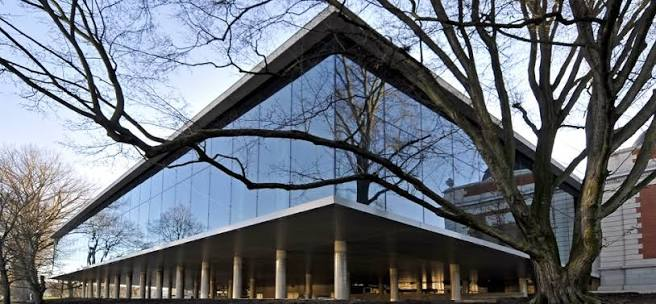

CityLoop Quest Liège


L’architecture liégeoise adore les contrastes. Le roman de Saint-Barthélemy, le gothique de Saint-Paul ou de Saint-Jacques, les cours Renaissance du palais, les façades classiques de La Violette et les lignes contemporaines des Guillemins ne cherchent pas à former une carte postale uniforme.
La pierre calcaire, la brique, l’ardoise et les ferronneries composent une palette locale que l’on retrouve dans les rues anciennes. Hors-Château, les impasses, les hôtels particuliers et les enseignes sculptées donnent une leçon d’urbanisme dense : peu d’espace, beaucoup de caractère.
Le XIXe siècle ajoute passages couverts, boulevards, gares, équipements publics et bâtiments industriels. Liège devient une ville de flux : marchandises, ouvriers, étudiants, voyageurs. Le Passage Lemonnier et les traces de l’industrie racontent cette modernité commerciale et technique.
Le XXIe siècle ne gomme pas ces couches. La gare des Guillemins, la passerelle La Belle Liégeoise, la reconversion de La Boverie ou de la Cité Miroir montrent une ville qui préfère transformer plutôt que muséifier. C’est parfois audacieux, parfois discuté, mais rarement tiède.